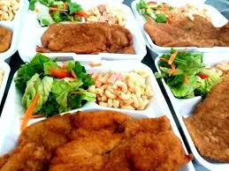

Sopa blanca con ensalada y pechugas empanizadas
Ingredientes
- 2 pechugas de pollo
- 1 taza de sopa blanca (preparada o en polvo)
- ½ litro de agua (si usas sopa en polvo)
- 1 cucharadita de sal
- ½ cucharadita de pimienta
- Lechuga, tomate y zanahoria al gusto
- 1 huevo
- Pan rallado
- Aceite para freír
Preparación
- Si usas sopa en polvo, calienta el agua en una olla, agrega la sopa blanca y cocina siguiendo las instrucciones del paquete. Añade sal y pimienta al gusto. Reserva caliente.
- Lavar y cortar la lechuga, tomate y zanahoria. Colocar en un plato grande como base de la ensalada.
- Batir el huevo en un recipiente. Pasar las pechugas de pollo por el huevo y luego por el pan rallado hasta que estén bien cubiertas.
- Freír las pechugas en aceite caliente hasta que estén doradas y cocidas por dentro.
- Servir las pechugas sobre la ensalada y acompañar con la sopa blanca caliente, ya sea en un plato aparte o en un pequeño cuenco sobre la ensalada.
